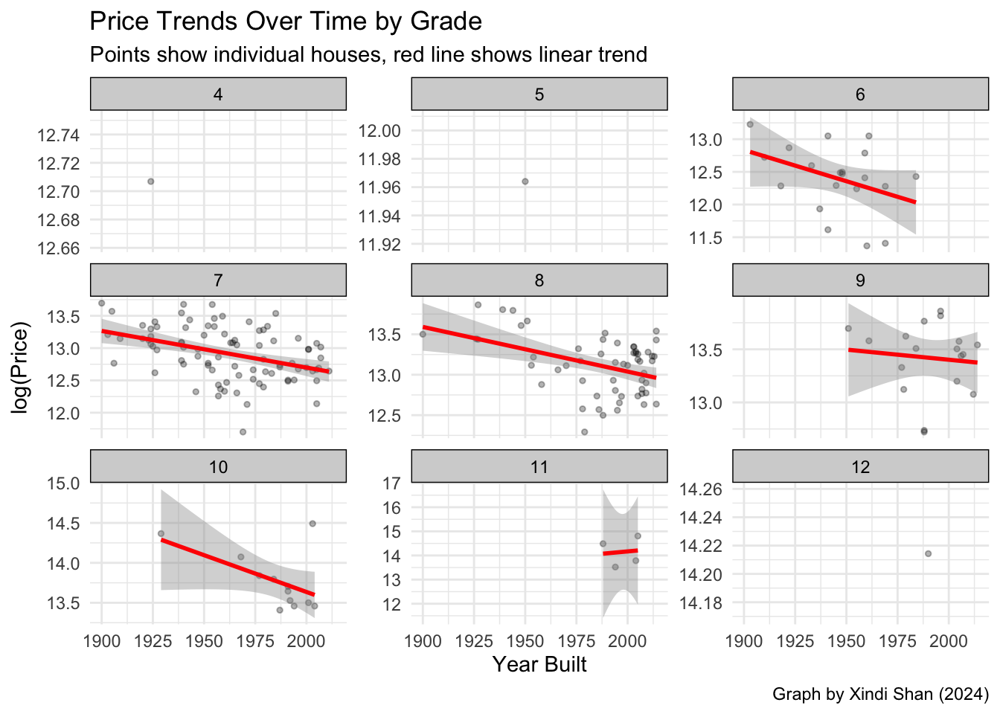

When purchasing a house in King County, potential buyers often consider factors such as construction quality, size, and age of the property. Using a sample from the King County housing dataset, I explore: To what extent do these fundamental housing characteristics - construction grade, living area, and year built - explain the variation in housing prices across the county?
Note
Specifically, we are considering:
what is the relationship between a house’s living area and its price, and does the relationships differ by grade?
how have housing prices evolved over time, for different construction grades?
Intended Audience
This analysis is designed for potential homebuyers and real estate professionals in King County who need to understand the relationship between house characteristics and prices. The information is presented in an accessible way for readers with basic statistical knowledge.
Dataset
Data Source
The data used in this analysis comes from the King County House Sales dataset, which is available on Kaggle(Burhanyk 2023). The dataset contains house sale prices for King County, which includes Seattle and its surrounding areas, with homes sold between May 2014 and May 2015.
Data Dictionary
While we focus on these four key features that most directly influence price, the original full dataset contains 21 variables including bathrooms, floors, and waterfront status.
The variables used in our analysis are defined as follows:
Variable
Description
price
Sale price of the house in dollars
grade
Grade of the house on King County grading system (1-13) • 1-3: Poor construction • 4-6: Low quality • 7: Average • 8-10: Good quality • 11-13: High quality/Luxury
# Add log_price to datasetdata$log_price <-log(data$price)
Data Preprocessing Step
Before creating visualizations, we first transformed the price variable using natural logarithm (log(price)). This transformation is common in housing price because:
House prices typically follow a right-skewed distribution (James et al. 2013)
It helps normalize the data
Makes it easier to interpret percentage changes in price
# 1. Enhanced Box Plot with Points - Focus on Grade Distributionp1 <-ggplot(data, aes(x =factor(grade, levels =sort(unique(grade))), y = log_price)) +geom_boxplot(fill ="lightblue", alpha =0.5) +geom_violin(alpha =0.2) +geom_jitter(width =0.2, alpha =0.1) +theme_minimal() +labs(title ="Price Distribution Across Housing Grades in King County",subtitle ="Showing price spread and density for each grade level",caption ="Graph by Xindi Shan (2024)",x ="Grade",y ="log(Price)") +theme(axis.text.x =element_text(angle =0))p1
Warning: Groups with fewer than two datapoints have been dropped.
ℹ Set `drop = FALSE` to consider such groups for position adjustment purposes.
Groups with fewer than two datapoints have been dropped.
ℹ Set `drop = FALSE` to consider such groups for position adjustment purposes.
Groups with fewer than two datapoints have been dropped.
ℹ Set `drop = FALSE` to consider such groups for position adjustment purposes.
# 2. Faceted Year Analysis - Temporal Patterns by Gradep2 <-ggplot(data, aes(x = yr_built, y = log_price)) +geom_point(alpha =0.3, size =1) +geom_smooth(method ="lm", se =TRUE, color ="red") +# Facet by gradefacet_wrap(~grade, scales ="free_y", ncol =3) +theme_minimal() +labs(title ="Price Trends Over Time by Grade",subtitle ="Points show individual houses, red line shows linear trend",caption ="Graph by Xindi Shan (2024)",x ="Year Built",y ="log(Price)") +theme(strip.background =element_rect(fill ="lightgray"),strip.text =element_text(color ="black"))p2
`geom_smooth()` using formula = 'y ~ x'

# 3. Size-Price Relationship With Gradep3 <-ggplot(data, aes(x = sqft_living, y = log_price)) +# Points colored by gradegeom_point(aes(color =as.factor(grade)), alpha =0.6) +geom_smooth(method ="lm", se =TRUE, color ="black") +scale_color_viridis_d(name ="Grade") +theme_minimal() +labs(title ="Price-Size Relationship by Grade",subtitle ="Points colored by grade, black line shows overall trend",caption ="Graph by Xindi Shan (2024)",x ="Living Area (sqft)",y ="log(Price)")p3
`geom_smooth()` using formula = 'y ~ x'
Tip
Note that our analysis focuses on a random sample of 200 houses from the full King County dataset.
Summary and Interpretation
The examination of King County’s housing market reveals several significant patterns. Properties with higher grade values consistently command higher log_price values. The relationship between sqft_living and log_price is particularly strong in high-grade properties, reflecting the luxury segment of the Seattle market. Analysis of yr_built shows an upward trend in log_price across all grades, influenced by the region’s tech industry growth. Moreover, larger homes (measured by sqft_living) typically correspond to higher grade values, indicating a strong relationship between construction quality and house size.
James, Gareth, Daniela Witten, Trevor Hastie, and Robert Tibshirani. 2013. “An Introduction to Statistical Learning: With Applications in r.”Springer, 59–126.